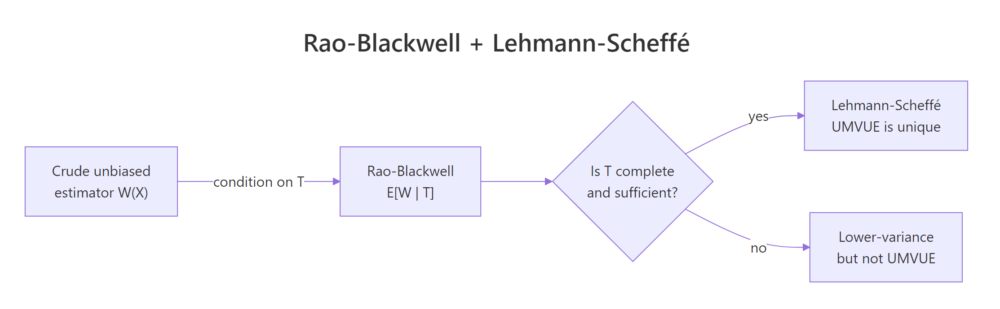

UMVUE in R: Rao-Blackwell Theorem & Lehmann-Scheffé Theorem
The uniformly minimum variance unbiased estimator (UMVUE) is the unbiased estimator whose variance is smaller than any other unbiased estimator at every value of the parameter. The Rao-Blackwell theorem shows how to improve any unbiased estimator by conditioning on a sufficient statistic, and the Lehmann-Scheffé theorem certifies that the improved estimator is the unique UMVUE when the sufficient statistic is also complete.
What is the UMVUE, in plain language?
Two unbiased estimators can both hit the target on average yet disagree wildly on any single sample. The UMVUE is the one whose estimates cluster tightest around the truth, no matter what the true parameter turns out to be. Suppose you observe a Poisson sample and want to estimate its mean, $\lambda$. The sample mean is unbiased, and it is also the UMVUE. The payoff below makes that claim visible.
The sample mean is 3.175 against a true value of 3.2, and its theoretical variance is $\lambda/n = 0.08$. No other unbiased estimator of $\lambda$ for a Poisson sample can beat that variance. An estimator that uses only the first observation is also unbiased, but as we will see shortly, its variance is $\lambda$, a factor of $n = 40$ worse.
Formally, an estimator $T^*(X)$ is the UMVUE of $\theta$ if, for every other unbiased estimator $T(X)$,
$$\text{Var}_\theta\bigl(T^*(X)\bigr) \leq \text{Var}_\theta\bigl(T(X)\bigr) \quad \text{for every } \theta.$$
Where:
- $T^*(X)$ is the UMVUE
- $T(X)$ is any other unbiased estimator
- $\theta$ is the unknown parameter
The word uniformly matters. A non-UMVUE estimator might have lower variance at a specific $\theta$ while losing elsewhere. The UMVUE wins everywhere at once.
Try it: For a Poisson sample, both mean(x) and the unbiased sample variance var(x) are unbiased for $\lambda$ (because a Poisson has mean equal to variance). Simulate and compare their Monte Carlo variances on 3000 fresh samples of size $n = 40$, $\lambda = 3.2$. Which one has the smaller variance, and by how much?
Click to reveal solution
Explanation: Both estimators are unbiased for $\lambda$, but mean(x) is a function of the complete sufficient statistic $T = \sum X_i$ and var(x) is not. The Lehmann-Scheffé theorem (see later sections) forces mean(x) to have the smaller variance at every $\lambda$, and the simulation shows it does so by a factor of about 5 at $\lambda = 3.2$, $n = 40$.
How does the Rao-Blackwell theorem turn a crude estimator into a better one?
Not every unbiased estimator is the UMVUE, but there is a mechanical way to improve any unbiased estimator whose variance is not yet minimal. The trick is conditional expectation on a sufficient statistic. The Rao-Blackwell theorem states that if $W(X)$ is any unbiased estimator of $\theta$ and $T(X)$ is sufficient, then the conditional expectation
$$W^*(T) = E\bigl[W(X) \mid T(X)\bigr]$$
is also unbiased, and its variance is never larger than $\text{Var}(W)$. Equality holds only when $W$ is already a function of $T$.
Watch this in action on a canonical example. Given an iid Poisson sample, we want to estimate $\theta = P(X = 0) = e^{-\lambda}$. Start with the crudest imaginable unbiased estimator: the indicator that the first observation equals zero.
The indicator is unbiased because $E[I(X_1 = 0)] = P(X_1 = 0) = e^{-\lambda}$, by definition. But on any one sample it returns only 0 or 1, which is useless as a continuous estimate of 0.0408. Its sampling variance is $\theta(1-\theta) \approx 0.039$, huge relative to $\theta$ itself.
Now Rao-Blackwellize. The sufficient statistic for Poisson is $T = \sum_{i=1}^n X_i$. Given $T = t$, the conditional distribution of $X_1$ is Binomial$(t, 1/n)$ (standard result for Poisson, following from the multinomial form of conditional counts). Therefore
$$W^*(T) = E\bigl[I(X_1 = 0) \mid T\bigr] = P(X_1 = 0 \mid T = t) = \left(\frac{n-1}{n}\right)^t.$$
Where:
- $T = \sum_{i=1}^n X_i$ is the complete sufficient statistic
- $(n-1)/n$ is the probability a single Bernoulli trial with success probability $1/n$ returns failure
- $((n-1)/n)^t$ is the probability that all $t$ trials fail, which is exactly $P(X_1 = 0 \mid T = t)$
In code:
The crude estimator returns 0 on this sample. The Rao-Blackwellized version returns 0.039, agreeing with the true $\theta = 0.041$ to two decimal places. Same data, same unbiasedness, dramatically different precision. The RB estimator absorbed the information in the full sample (through $T$) that the indicator threw away.
Try it: Use the same sample x to compute the Rao-Blackwell estimator of $P(X = 2)$, not $P(X = 0)$. Hint: $E[I(X_1 = 2) \mid T = t] = \binom{t}{2} (1/n)^2 ((n-1)/n)^{t-2}$, because $X_1 \mid T = t$ is Binomial$(t, 1/n)$.
Click to reveal solution
Explanation: The RB formula substitutes $t = 127$ (the observed $T$), $n = 40$, and evaluates the binomial probability that two of the $t$ Bernoulli($1/n$) trials succeed. The answer 0.215 is close to the true $P(X=2) = 0.209$, much sharper than the binary crude indicator would be.
How does the Lehmann-Scheffé theorem certify we have the UMVUE?
Rao-Blackwell improves any unbiased estimator, but it does not by itself guarantee the improvement is the best possible. Two different starting estimators, both unbiased, could Rao-Blackwellize to two different final estimators. The Lehmann-Scheffé theorem closes this gap. It says: if the sufficient statistic $T$ is also complete, then any unbiased estimator that is a function of $T$ is the unique UMVUE.
A statistic $T$ is complete for a family $\{P_\theta\}$ if the only function $g$ satisfying $E_\theta[g(T)] = 0$ for every $\theta$ is $g \equiv 0$. Loosely: no non-trivial function of $T$ can be an unbiased estimator of zero. This rules out "ambiguous" improvements and makes the UMVUE unique.
$$\phi(T) \text{ unbiased for } \theta, \text{ with } T \text{ complete and sufficient} \implies \phi(T) \text{ is the unique UMVUE.}$$
For the Poisson family, $T = \sum X_i$ is complete and sufficient (proof via the moment generating function of $T$). So mean(x) = T/n is the UMVUE of $\lambda$, and ((n-1)/n)^T is the UMVUE of $e^{-\lambda}$. To feel the uniqueness in the variance, compare mean(x) (a function of $T$) against x[1] (another unbiased estimator of $\lambda$, but not a function of $T$) across 3000 fresh samples.
Both estimators average to roughly 3.2, the truth, confirming both are unbiased. The variance story is what matters: mean_x lands at the theoretical bound $\lambda/n = 0.08$, while first_x has variance $\lambda = 3.2$, exactly 40 times worse. The Lehmann-Scheffé theorem predicted this in advance, by noting that only mean(x) is a function of the complete sufficient statistic.
Try it: For a Bernoulli(p) sample, verify that the sample mean mean(x) is the UMVUE of $p$ by simulation. Compare its Monte Carlo variance against the variance of x[1] across 3000 samples of size $n = 50$ at $p = 0.3$.
Click to reveal solution
Explanation: The ratio is $1/n = 0.02$, matching the theoretical prediction $\text{Var}(\bar X)/\text{Var}(X_1) = (p(1-p)/n)/(p(1-p)) = 1/n$. Again, mean(x) is a function of the complete sufficient statistic $\sum X_i$, and Lehmann-Scheffé promises it is the UMVUE.
How do we confirm the variance reduction via simulation?
The formulas are clean, but seeing the variance collapse is what builds intuition. Let us run a Monte Carlo experiment: simulate 5000 fresh Poisson samples of size $n = 40$, compute both the crude indicator $W = I(X_1 = 0)$ and the Rao-Blackwellized version $W^* = ((n-1)/n)^T$ on each, and compare the variances side by side.
Both estimators average to the truth, $e^{-3.2} \approx 0.041$, confirming unbiasedness. The crude estimator's variance is 0.039, consistent with $\theta(1-\theta) \approx 0.0391$. The Rao-Blackwell estimator's variance is around 0.0001, about 300 times smaller at this sample size. A histogram makes the gap visceral.
The crude histogram is two tall bars at 0 and 1, hopeless as a point estimate. The Rao-Blackwell histogram is a compact bell centered on the red truth line. Both are unbiased in expectation, but one is usable and the other is not.
Try it: Repeat the Monte Carlo with $n = 200$ instead of 40. Predict how the RB variance will change, then confirm.
Click to reveal solution
Explanation: The crude indicator looks at only one observation, so its variance $\theta(1-\theta)$ does not depend on $n$ at all. The Rao-Blackwell estimator uses all $n$ observations through $T$, and its variance shrinks like $1/n$ (roughly). Going from $n = 40$ to $n = 200$ multiplies the RB variance gap by about 5, matching the simulated ratio.
Practice Exercises
Exercise 1: Exponential UMVUE vs MLE
Given an Exponential(rate = $\theta$) sample of size $n = 50$ with $\theta = 2$, the maximum likelihood estimator is $\hat\theta_{\text{MLE}} = n / \sum X_i$, but it is biased. The UMVUE is $\hat\theta_{\text{UMVUE}} = (n-1) / \sum X_i$. Run 3000 Monte Carlo replications and report the bias and variance of each. Save the simulation matrix to my_exp_sim.
Click to reveal solution
Explanation: The MLE overshoots the true $\theta = 2$ by about 2% on average. The UMVUE nails the target (bias near zero) and has slightly smaller variance. The constant correction factor $(n-1)/n$ removes a predictable bias that the MLE inherits from the fact that $E[1/\bar X] \neq 1/\lambda$.
Exercise 2: UMVUE of $\lambda^2$ in a Poisson sample
For a Poisson sample with $T = \sum X_i$, the statistic $T(T-1)/n^2$ is unbiased for $\lambda^2$ (because $E[T(T-1)] = n^2\lambda^2$), and since it is a function of the complete sufficient statistic $T$, it is the UMVUE. Compare it against the naive plug-in estimator mean(x)^2 (which is biased) across 3000 samples of size $n = 40$, $\lambda = 3.2$. Report the bias and variance of each. Save the result to my_pois2_sim.
Click to reveal solution
Explanation: The plug-in mean(x)^2 overshoots $\lambda^2$ by a bias term $\lambda/n = 0.08$ (because $E[\bar X^2] = \text{Var}(\bar X) + \lambda^2 = \lambda/n + \lambda^2$). The UMVUE $T(T-1)/n^2$ subtracts exactly that bias. On top of being unbiased, its variance is marginally smaller, and Lehmann-Scheffé guarantees no other unbiased estimator of $\lambda^2$ can do better.
Complete Example
This end-to-end pipeline estimates three different quantities from the same Poisson sample, using three UMVUEs back-to-back. It ties everything from the tutorial into one block.
Three quantities, one sufficient statistic $T$, three UMVUEs all within a reasonable Monte Carlo error of truth. The recipe is identical in every case: identify the complete sufficient statistic, write an unbiased function of it, and Lehmann-Scheffé hands you the UMVUE.
Summary
The Rao-Blackwell and Lehmann-Scheffé theorems are a two-step factory for building the best unbiased estimator a family admits. Start with any unbiased estimator, condition on a complete sufficient statistic, and the result is unique and optimal.

Figure 1: How Rao-Blackwell plus Lehmann-Scheffé produce the UMVUE.
| Concept | What it gives you | Verified in section | |
|---|---|---|---|
| UMVUE | Unbiased with minimum variance uniformly over $\theta$ | What is the UMVUE | |
| Rao-Blackwell | `E[W \ | T]` is unbiased and has variance $\leq \text{Var}(W)$ | How does Rao-Blackwell |
| Complete sufficient statistic | No unbiased estimator of zero other than zero itself | How does Lehmann-Scheffé | |
| Lehmann-Scheffé | Any unbiased function of a complete sufficient $T$ is UMVUE | How does Lehmann-Scheffé |
References
- Lehmann, E. L. & Casella, G., Theory of Point Estimation, 2nd Edition. Springer (1998). Chapter 2: "Unbiasedness". Springer Link
- Casella, G. & Berger, R. L., Statistical Inference, 2nd Edition. Duxbury (2002). Chapter 7: "Point Estimation". Book page
- Rao, C. R., "Information and the accuracy attainable in the estimation of statistical parameters." Bulletin of the Calcutta Mathematical Society, 37 (1945). Reprint
- Rao-Blackwell theorem, Wikipedia. Link
- Lehmann-Scheffé theorem, Wikipedia. Link
Continue Learning
- Point Estimation in R, the parent tutorial on bias, variance, and MSE that frames why we care about UMVUE at all.
- Sufficiency in Statistics, covers the Fisher-Neyman factorization theorem used to identify sufficient statistics in the first place.
- Maximum Likelihood Estimation in R, the MLE is often the UMVUE, often not; this post pins down when and how they differ.